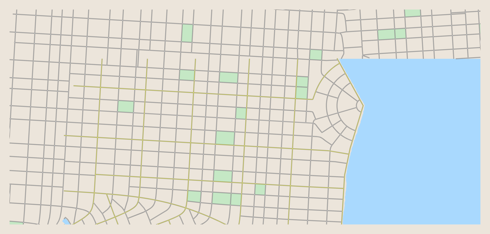
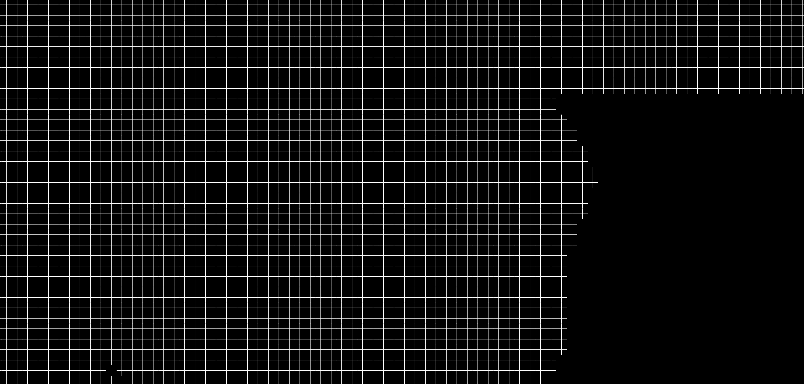

Estruturação do Problema¶
1. Ambiente¶
Para representar o espaço onde os indivíduos transitam e interagem, será utilizado um mapa quadriculado, em que cada célula representa uma casa ou um local de interesse.
Os locais de interesse são:
- Escola (E)
- Trabalho (T)
- Supermercado (S)
- Parque (P)
- Festa (F)
Cada agente possui uma casa base (H) de onde parte e para onde retorna no fim do dia.
Exemplo de representação:
Imagem real da cidade:

{kind=link}
Representação em quadrados:

{kind=link}
2. Agentes¶
Os agentes serão modelados como autômatos probabilísticos, cada um com os seguintes atributos:
- Idade (influencia rotina e suscetibilidade)
- Papel social (estudante, trabalhador, desempregado, etc.)
-
Estado de saúde:
-
Suscetível (S)
- Infectado (I)
- Recuperado (R)
Fluxo dos agentes:
{kind=link}
Ciclo de Vida¶
- O tempo é dividido em ticks (ex.: 3 a 4 por dia), que representam passos discretos de tempo.
- Em cada tick, o agente decide uma ação, que pode ser controlada (rotina) ou esporádica (aleatória).
Ações Controladas¶
- Escola / Trabalho → ocorrem em 1 ou 2 ticks fixos do dia.
- Supermercado → ocorre de forma esporádica.
- Festa → ocorre em horários sociais (noites e finais de semana).
Ações em Caso de Doença¶
Se infectado, o comportamento pode mudar:
- Faltar ao trabalho/escola.
- Permanecer em casa (repouso).
- Buscar atendimento médico (dependendo da gravidade dos sintomas).
3. Fórmulas de Motivação para Ações¶
A probabilidade de um agente realizar uma ação \(a\) em um tick \(t\) é dada por:
Explicação:
- \(B_a\) → Base de motivação da ação: define a tendência natural do agente de realizar determinada ação.
- \(A(t)\) → Ajuste temporal: considera hora do dia, dia da semana e fins de semana.
- \(M_i\) → Fator individual: idade, papel social e sintomas de doença.
Exemplo:
- Crianças → \(P_{escola}(t)\) alto em dias úteis pela manhã.
- Adultos trabalhadores → \(P_{trabalho}(t)\) alto em dias úteis, baixo em fins de semana.
- Todos → \(P_{supermercado}(t)\) moderado e aleatório.
- Jovens → \(P_{festa}(t)\) alto em fins de semana.
4. Fórmulas de Contaminação e Progressão do Estado de Saúde (Tempo Discreto)¶
4.1 Contaminação¶
A transmissão ocorre quando um agente suscetível (S) e um agente infectado (I) compartilham a mesma célula durante um tick:
Explicação:
- \(\beta\) → taxa básica de transmissão da doença.
- \(C_{loc}\) → fator de contágio do local.
- \(S_i\) → suscetibilidade do agente \(i\).
- \(I_j\) → infectividade do agente \(j\).
Probabilidade composta para múltiplos infectados:
Explicação:
- Cada infectado \(j\) na célula oferece uma chance independente de infectar \(i\).
- \((1 - P_{trans}(i,j))\) → probabilidade de não ser infectado por \(j\) neste tick.
- O produto calcula a probabilidade de não ser infectado por nenhum.
- Subtraindo de 1, obtemos a chance de ser infectado por pelo menos um infectado nesse tick.
Exemplo:
- Dois infectados na célula: \(P_{trans}(i,j_1)=0.1\), \(P_{trans}(i,j_2)=0.2\)
- Probabilidade de não ser infectado: \(0.9 \cdot 0.8 = 0.72\)
- Probabilidade de ser infectado: \(1-0.72 = 0.28\) (28% neste tick)
4.2 Progressão do Estado de Saúde¶
Cada tick, o agente infectado \(I\) pode recuperar, morrer ou permanecer infectado.
- Suscetível → Infectado
-
Probabilidade avaliada em cada tick, considerando todos os infectados na mesma célula.
-
Infectado → Recuperado
-
\(P_{rec}\) → probabilidade por tick de recuperação, já ajustada para o modelo discreto.
-
Infectado → Morto
- \(P_{mort}\) → probabilidade por tick de morte, ajustada por fatores individuais.
4.3 Normalização das Probabilidades¶
Para que recuperação e morte não ocorram simultaneamente no mesmo tick:
- Mantém a soma das probabilidades \(\leq 1\) por tick.
4.4 Resumo das Transições (Tempo Discreto)¶
- Cada tick:
- Calcula-se infecção de suscetíveis.
- Aplica-se recuperação ou morte dos infectados.
- Permite acompanhar picos de contaminação, efeito do comportamento social e impacto das taxas de transmissão e mortalidade.
5. Objetivos da Simulação¶
- Observar o impacto do comportamento social na propagação da doença.
- Medir:
- Número de infectados ao longo do tempo.
- Picos de contaminação.
- Tempo até estabilização (ou colapso das rotinas).
6. Evoluções e outras perspectivas¶
Durante a revisão bibliográfica e a elaboração deste documento, foram identificados alguns pontos relevantes que podem ser explorados em trabalhos futuros:
- O auto cuidado pode ser realizado conforme a intensidade e a natureza dos sintomas apresentados.
- O diagnóstico médico inicial pode ser baseado nos sintomas observados e em sua intensidade.
- Tratamentos não são imediatos e podem ser modelados por uma distribuição lognormal, com média de 3 dias e intervalo de 0 a 10 dias, aplicável a todas as doenças.
- Aplicação do princípio da homofilia, atribuindo maior probabilidade de interação entre indivíduos com características semelhantes.
- Considerar o vento como fator de dispersão de doenças transmitidas ao ar livre, utilizando um modelo de sopro gaussiano modificado para simular a dispersão pelo vento.
- A implementação de mecanismos de compartilhamento de informações entre os agentes acerca do estado da calamidade pode incorporar elementos de percepção de risco ou medo de contaminação, tornando a simulação mais próxima do comportamento observado em cenários reais.
- Futuramente, o grupo planeja implementar agentes especializados que representem uma rede hospitalar, a qual seria submetida a situações de estresse diante do aumento de agentes doentes. O objetivo é modelar cenários de crise, como pandemias ou contextos de guerra, nos quais os hospitais atingem sua capacidade máxima e precisam se organizar de forma estratégica para salvar o maior número possível de pacientes.
Versionamento¶
| Versão | Data | Autor/Responsável | Alterações Principais |
|---|---|---|---|
| v1.0 | 2025-09-21 | Pedro Lucas | Criação do Documento e adição do problema. |
| v1.1 | 2025-09-22 | Pablo Guilherme | Acrecimo de pontos no tópico 6. |